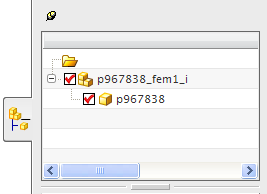

理想化部件文件
理想化部件文件是仅与关联 FEM 文件配合使用的特殊 NX 装配文件。
主模型部件是理想化部件的组件。您必须先提升理想化部件或将其与 WAVE 相链接，然后才能使用理想化命令修改它的几何体。所有修改均存储在理想化部件文件中，并且原始主模型几何体不会发生任何更改。
可以使用理想化命令或同步建模命令来修改理想化部件。
在以下情况下创建理想化部件文件：
-
对主模型部件文件没有写访问权
-
在并行工程环境中，要捕集部件几何体的最新更改并相应地更新 FEM
-
在受管环境(如 Teamcenter Integration)中工作
-
在几何体需要明显的理想化时，希望保留未改动的原有几何体
 |
与仿真导航器中的理想化部件相关联的 FEM 文件
|

|
装配导航器中的理想化部件文件
一个 CAD 部件可以用作多个理想化部件文件的组件。这样，便可以针对不同的分析类型执行不同的理想化，同时使原始几何体保持不变。
 |